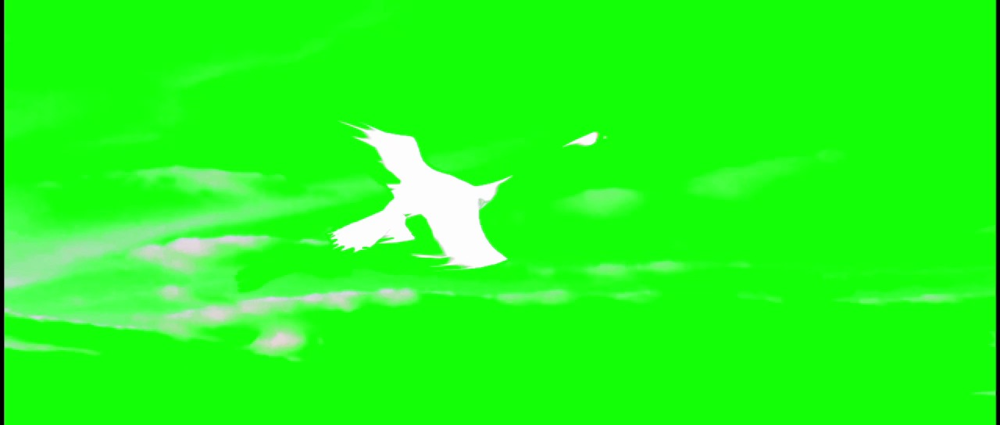
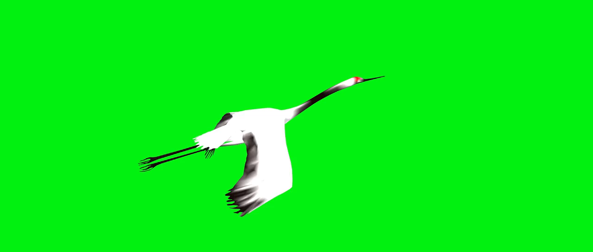
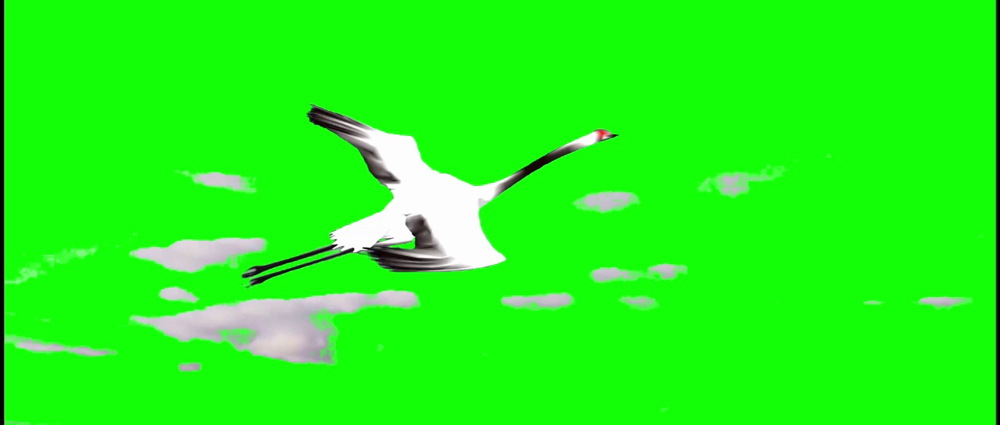
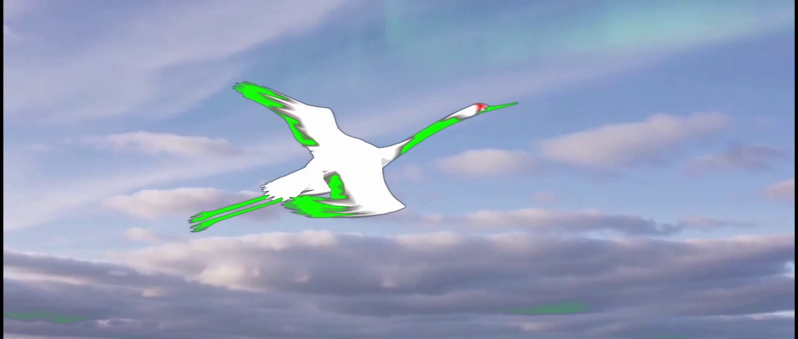
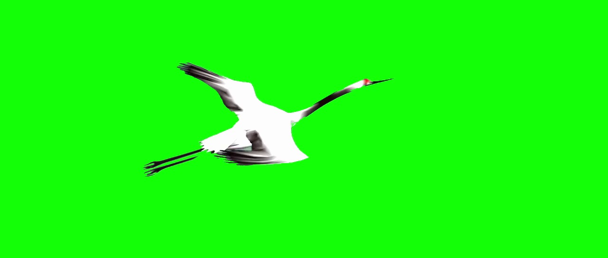
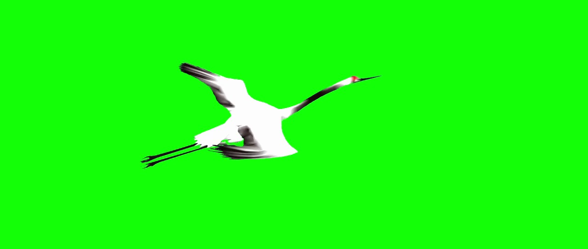

Luna 1 · 亮度阈值保住白羽，删掉了深色身体细节
先后尝试 DeltaKeyer、ChromaKeyer 并反相，最终改用 LumaKeyer。正式阈值为 Low 0.69、High 0.86、Gamma 0.85、Blur 0.4。亮羽被保留，但颈、腿与暗羽出现明显缺失，云层也未完全去除。五帧主体保留均被裁判判为 NO，最终均分仅 0.0918。

证据：#23–27 转向亮度键控与调参 · 五帧软判分 · 完整成片
一段约 10 秒的白鹤飞行视频，一张绿幕外观参考。Agent 需要在 Resolve/Fusion 中去掉天空与云层，同时保留羽翼、细腿、颈部及连续运动，交付可编辑工程和原生渲染成片。
本次复现设置：使用 ALE 锁定版本的评分公式、提示词、断点与阈值；软裁判经授权由默认 gpt-5.4 配置为 gpt-6-astra。模型通过本地 Resolve Lua API 桥接完成操作，成绩对应这一适配设置，与官方 GUI 设置及默认裁判配置有差异。

input.png，与原片一同提供给 Agent。它用于参考外观；连续运动仍须来自原视频。#00FF00。output.mp4、可导入重渲染的 project.drp 及说明方法、参数与缺陷的 README.md。输入与任务来自 ALE visual_media/chroma_key_from_reference / crane_flyingsky。模型只获得公开素材、任务说明与 API 文档；隐藏参考在所有模型完成后才进入评分环节。
| 应用与通道 | DaVinci Resolve Free 21.1.2.10，Windows，本地应用内 Lua 桥接；模型可查询控件、写 Fusion 节点、渲染、观察真实帧、导出 DRP。 |
|---|---|
| 固定预算 | 每轮 90 分钟、160 次工具调用、200 次 API 请求；reasoning = high，每次最大输出 8,000 tokens。 |
| 独立性与纳入规则 | Sol 1 → Luna 1 → Sol 2 → Luna 2 → Sol 3 → Luna 3。每次为新工程、新会话，相同输入字节；不提供前轮方案与评分反馈。全部六次纳入，先导批次不计。 |
| 基础设施续接 | 部分轮次出现 API 限流、断线；在原会话与原工程续接，回执、请求次数与恢复事件保留。未据分数重新挑选运行。 |
| 模型身份 | 记录请求 ID 与网关返回 ID；未独立验证服务背后的模型权重。 |
| 判分差异 | 默认 GPT-5.4 被网关拒绝后，经用户授权通过官方支持的 JUDGE_MODEL 改用 Astra。Windows 中文路径写帧问题仅在适配器中改用 ASCII 临时目录，官方代码未改，镜像帧字节一致。 |
采用 ALE 原生 0–1 量纲，报告全部三次的算术均值和样本标准差。六份交付都保持原片格式并通过 DRP 导入后重渲染检查；成片视觉质量仍有明显差距。
样本标准差 0.0242 · 范围 0.4821–0.5255
三次独立交付，全部纳入统计
样本标准差 0.0849 · 范围 0.0918–0.2570
三次独立交付，全部纳入统计
| 模型 | 轮次 | 原生规则得分 / 1 | 分钟 | 工具 / API 请求 | 格式 / 工程重放 | 原始交付 |
|---|---|---|---|---|---|---|
| gpt-6.1-sol | 1 | 0.525462 | 29.74 | 60 / 62 | 通过 / 通过 | 成片 工程 交付包 |
| gpt-6-luna | 1 | 0.091828 | 4.49 | 32 / 33 | 通过 / 通过 | 成片 工程 交付包 |
| gpt-6.1-sol | 2 | 0.522343 | 30.87 | 79 / 80 | 通过 / 通过 | 成片 工程 交付包 |
| gpt-6-luna | 2 | 0.256951 | 5.09 | 28 / 32 | 通过 / 通过 | 成片 工程 交付包 |
| gpt-6.1-sol | 3 | 0.482058 | 48.21 | 86 / 90 | 通过 / 通过 | 成片 工程 交付包 |
| gpt-6-luna | 3 | 0.208310 | 4.80 | 30 / 30 | 通过 / 通过 | 成片 工程 交付包 |
用时为运行器记录值，包含该轮的工具、渲染与 API 等待；API 请求数包含重试。n = 3 仅提供初步波动估计，不能保证稳定性。完整结果与恢复记录 ↓
可任选两模型的轮次并跳转到同一时刻。播放器使用正式交付 MP4 原文件；图片预览由实际视频解码。
网页以原片为时间基准校准播放器；浏览器解码可能有短暂漂移。精确观察评分时点可使用下方静帧和原始视频。浏览器显示也受视频像素宽高比影响，交付中的窄黑边等细节保留原样。
官方断点为 1、3、5、7、9 秒。每个断点先检查输入结构保留与软判分门槛，通过后计算边缘质量，最终取五帧均值。
本例官方断点未指定局部框，原生实现回退到全画面，因此 full 与 ROI 的边缘 IoU 相同。Soft 为三项 YES/NO 的均值：做了实际抠像、不是原片拷贝、主体合理保留。roi_input_cv 是原生结构指标，不等同于完整主体质量。
| 时间 | roi_input_cv | soft | full edge IoU | ROI edge IoU | 两项门槛 | 帧分 |
|---|
原生门槛的一个边界：Luna 第 1 轮的五帧，Astra 都回答“主体保留 = NO”，另外两项为 YES，soft 仍为 2/3，超过 0.5。按原版规则保留此行为。六轮全部 30 个断点都通过两项门槛，因此最终分数由边缘 IoU 决定。
这套评分只覆盖五个时点，软检查也较粗。它不充分度量全片的时域闪烁、运动模糊、色彩污染或专业交付观感；以下分析结合实际输出与工具记录说明问题，没有另外加减分。
每条记录包含实际工具参数、模型提供的操作理由、返回结果和当时看见的真实媒体帧。可按工具、关键词和错误筛选，查看 Lua 与 Fusion 节点代码。
| 模型 · 轮次 | 工具总数 | Lua / Fusion 粘贴 | 渲染调用 | 观察图 | 工具错误 | 完整轨迹 |
|---|---|---|---|---|---|---|
| gpt-6.1-sol · 1 | 60 | 23 / 1 | 8 | 113 | 2 | 浏览轨迹 → |
| gpt-6-luna · 1 | 32 | 12 / 0 | 6 | 17 | 1 | 浏览轨迹 → |
| gpt-6.1-sol · 2 | 79 | 28 / 1 | 14 | 167 | 2 | 浏览轨迹 → |
| gpt-6-luna · 2 | 28 | 8 / 0 | 6 | 17 | 1 | 浏览轨迹 → |
| gpt-6.1-sol · 3 | 86 | 29 / 2 | 14 | 200 | 1 | 浏览轨迹 → |
| gpt-6-luna · 3 | 30 | 12 / 0 | 5 | 23 | 1 | 浏览轨迹 → |
观察图数量含多时点及局部裁切；错误数指工具返回的显式错误，不含 API 传输重试。公开轨迹处理了本地路径与会话信息，保留原记录哈希；操作理由来自工具参数，不含隐藏推理。
B − min(R,G) 区分偏蓝天空，叠加白羽、黑羽保护以及空间约束。第三轮还建立了 41 个姿态关键帧的翼部包络。更多迭代并未带来更高的边缘得分。
能成功调用软件与完成渲染，仍需要对结果中“被删除的是天空还是主体”做可靠判断。
这段素材没有天然绿幕。白云与白羽亮度接近，深色颈腿与背景边缘相互交叠；拍翼又持续改变轮廓。困难集中在把“背景去干净”和“主体保完整”同时做好，并将静帧调参推广到完整运动。
先后尝试 DeltaKeyer、ChromaKeyer 并反相，最终改用 LumaKeyer。正式阈值为 Low 0.69、High 0.86、Gamma 0.85、Blur 0.4。亮羽被保留，但颈、腿与暗羽出现明显缺失，云层也未完全去除。五帧主体保留均被裁判判为 NO，最终均分仅 0.0918。

证据：#23–27 转向亮度键控与调参 · 五帧软判分 · 完整成片
改用 ChromaKeyer 颜色范围并收紧 matte。主体比第 1 轮完整，但与白羽相近的亮云也被保留。扩大天空颜色范围仍未解决这一冲突，得分升至 0.2570，背景残留依然明显。

在 ChromaKeyer 与 LumaKeyer 之间切换，并多次改变 matte 方向。最终仍保留大部分天空，主体暗部有绿污染，交付说明也承认背景残留。得分为 0.2083，说明能调整参数并不意味着找对了前景分离条件。

三轮都采用色差、明暗保护和空间限制，输出整体轮廓更完整、天空清理更充分。仍需在细羽、喙尖、颈部、腿部与孤立云斑之间反复取舍：增强开运算可以减少云斑，也可能削去薄羽和细腿；扩大保护区则可能留下背景。


第 3 轮耗时 48.21 分钟、86 次工具调用，并创建 41 个姿态关键帧的翼部包络，得分却为三轮最低。轨迹显示投入集中在局部修补；结果表明这些修补仍未解决所有姿态与边缘细节，不能用方案复杂度替代最终输出验证。
证据：Sol 1 #30 起：形态修补与细节保护 · Sol 2 #39：动态引导与闭运算 · Sol 3 #47：41 姿态关键帧 · Sol 3 #69 起：RGB 检查与羽孔修补
软件执行与视觉判断分别暴露问题。六次都导出可重放工程，工具层面已跑通。Luna 的主要问题是键控方向、颜色重叠和主体完整性判断；Sol 的主要剩余问题是精细边界与跨姿态泛化。三轮 Sol 也都处理了原素材约 0.991667 的像素宽高比，避免几何解释影响成片。
每轮的 MP4、DRP、README 按模型正式交付原字节发布，ZIP 仅将三项打包。工程保留原始素材引用，异机重放需将素材重链到本页 input.mp4。中间渲染的观察帧在工具轨迹中。
Agents Last Exam：官方仓库 · 公开任务数据集。
任务标识：visual_media/chroma_key_from_reference / crane_flyingsky。原始输入、参考 PNG 均来自此任务，无合成测试样品。
代码版本 2e91edd3cd26baa35a38127c90c8e5241dfbe62f；公开数据版本 e9a2674a62f7d8069f136e642c10e8d8e9979dbf。完整下载来源与哈希见 manifest。
公开数据 CC BY 4.0，官方代码 Apache-2.0。来源与发布说明。
受控参考视频、原始断点文件与参考视频帧不随网页公开；页面提供评后数值及裁判答案，公开 input.png 仍可下载。